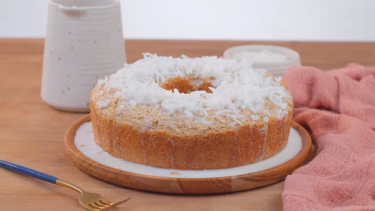

Bolo de coco
BOLO DE COCO
Ingredientes:
Massa
- 200 gramas de coco ralado
- 100ml de leite de coco
- 3 ovos
- 2 colheres de sopa de adoçante culinário
- 50 gramas de farinha de coco
- 1 colher de sopa de fermento em pó
- 50gramas de coco ralado(para decorar)
Calda
- 100 ml de leite de coco
- 100 ml de lete
- 1 colher de sopa de adoçante
Modo de preparo
Massa
- Em um potinho coloque o coco ralado e o leite de coco, misture e deixe o coco hidratando por 10 minutinhos.
- Em uma tigela coloque os ovos e misture o coco já hidratado, o creme de leite e a manteiga. Mexa com um batedor ou uma colher bem firme.
- Acrescente o adoçante e a farinha de coco, misture e por fim junte o fermento.
- Coloque a massa em uma forma untada e enfarinhada e leve ao forno pré aquecido a 180ºC por cerca de 35 minutos.
- Com o bolo ainda quente faça leves furinhos na massa e distribua a calda.
- Decore com o coco ralado e espere 15 minutinhos antes de cortar para o bolo absorver bem a calda.
Calda
- Em um potinho coloque todos os ingredientes e leve ao micro-ondas por 2 minutinhos, apenas para aquecer e engrossar levemente.
Home